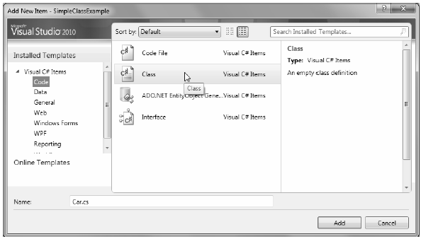

As far as the .NET platform is concerned, the most fundamental programming construct is the class type. Formally, a class is a user-defined type that is composed of field data (often called member variables) and members that operate on this data (such as constructors, properties, methods, events, and so forth). Collectively, the set of field data represents the "state" of a class instance (otherwise known as an object). The power of object-based languages such as C# is that by grouping data and related functionality in a unified class definition, you are able to model your software after entities in the real world.
To get the ball rolling, create a new C# Console Application named SimpleClassExample. Next, insert a new class file (named Car.cs) into your project using the Project ? Add Class... menu selection, choose the Class icon from the resulting dialog box as shown in Figure 5-1, and click the Add button.
A class is defined in C# using the class keyword. Here is the simplest possible declaration:
class Car
{
}
Once you have defined a class type, you will need to consider the set of member variables that will be used to represent its state. For example, you may decide that cars maintain an int data type to represent the current speed and a string data type to represent the car�s friendly pet name. Given these initial design notes, update your Car class as follows:
class Car { // The 'state' of the Car. public string petName; public int currSpeed; }
Figure 5-1. Inserting a new C# class type
Notice that these member variables are declared using the public access modifier. Public members of a class are directly accessible once an object of this type has been created. Recall the term "object" is used to represent an instance of a given class type created using the new keyword.
Note Field data of a class should seldom (if ever) be defined as public. To preserve the integrity of your state data, it is a far better design to define data as private (or possibly protected) and allow controlled access to the data via type properties (as shown later in this chapter). However, to keep this first example as simple as possible, public data fits the bill.
After you have defined the set of member variables that represent the state of the class, the next design step is to establish the members that model its behavior. For this example, the Car class will define one method named SpeedUp() and another named PrintState(). Update your class as so:
class Car { // The 'state' of the Car. public string petName; public int currSpeed; // The functionality of the Car. public void PrintState() { Console.WriteLine("{0} is going {1} MPH.", petName, currSpeed); } public void SpeedUp(int delta) { currSpeed += delta; } }
PrintState() is more or less a diagnostic function that will simply dump the current state of a given Car object to the command window. SpeedUp() will increase the speed of the Car by the amount specified by the incoming int parameter. Now, update your Main() method in the Program class with the following code:
static void Main(string[] args) { Console.WriteLine("***** Fun with Class Types *****\n"); // Allocate and configure a Car object. Car myCar = new Car(); myCar.petName = "Henry"; myCar.currSpeed = 10; // Speed up the car a few times and print out the // new state. for (int i = 0; i <= 10; i++) { myCar.SpeedUp(5); myCar.PrintState(); } Console.ReadLine(); }
Once you run your program, you will see that the Car variable (myCar) maintains its current state throughout the life of the application, as shown in the following code:
***** Fun with Class Types ***** Henry is going 15 MPH. Henry is going 20 MPH. Henry is going 25 MPH. Henry is going 30 MPH. Henry is going 35 MPH. Henry is going 40 MPH. Henry is going 45 MPH. Henry is going 50 MPH. Henry is going 55 MPH. Henry is going 60 MPH. Henry is going 65 MPH.
As shown in the previous code example, objects must be allocated into memory using the new keyword. If you do not make use of the new keyword and attempt to make use of your class variable in a subsequent code statement, you will receive a compiler error. For example, the following Main() method will not compile:
static void Main(string[] args) { Console.WriteLine("***** Fun with Class Types *****\n"); // Error! Forgot to use 'new' to create object! Car myCar; myCar.petName = "Fred"; }
To correctly create an object using the new keyword, you may define and allocate a Car object on a single line of code:
static void Main(string[] args) { Console.WriteLine("***** Fun with Class Types *****\n"); Car myCar = new Car(); myCar.petName = "Fred"; }
As an alternative, if you wish to define and allocate a class instance on separate lines of code, you may do so as follows:
static void Main(string[] args) { Console.WriteLine("***** Fun with Class Types *****\n"); Car myCar; myCar = new Car(); myCar.petName = "Fred"; }
Here, the first code statement simply declares a reference to a yet-to-be-determined Car object. It is not until you assign a reference to an object that this reference points to a valid object in memory.
In any case, at this point we have a trivial class that defines a few points of data and some basic methods. To enhance the functionality of the current Car class, we need to understand the role of constructors.